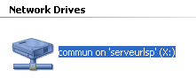
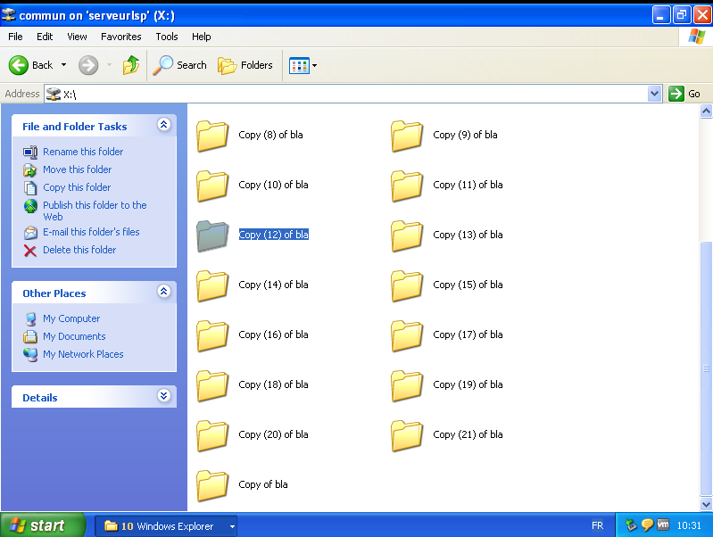

DeepCommun ---- Comment installer ---- Download ---- Wiki ---- FAQ
Etape 10: Instalation du Deepcommun (Partie 1)
Copier/Coller le fichier "Deepcommun.exe" là où vous voulez que les autres élèves puissent
accéder à votre deepcommun.




Cacher le un peut il ne faut pas que les eleves dont vous ne voulez pas qu'ils viennent sur votre Deepcommun tombent dessus par accident.
Etape 11: Instalation DeepCommun (Partie 2)
Démarrez le fichier "Deepcommun.exe" dans le dossier où vos amis pourront y accéder.
Et écrivez le chemin d'accès (voir étape 7)
Puis "Entrée" et suivez le reste du processus (rien de compliqué il suffit de lire).

/!\Edit:la configuration du DeepCommun ce fait désormais depuis l'exécutable configuration.exe/!\
Voilà ! Le Deepcommun est installé !
Je vous invite donc à aller sur le Wiki pour apprendre à utiliser le Deepcommun
| Swano Corp 2015 -- Tous droits réservés Swano corp -- En navigant sur le site vous acceptez les conditions d'utilisation |
|---|